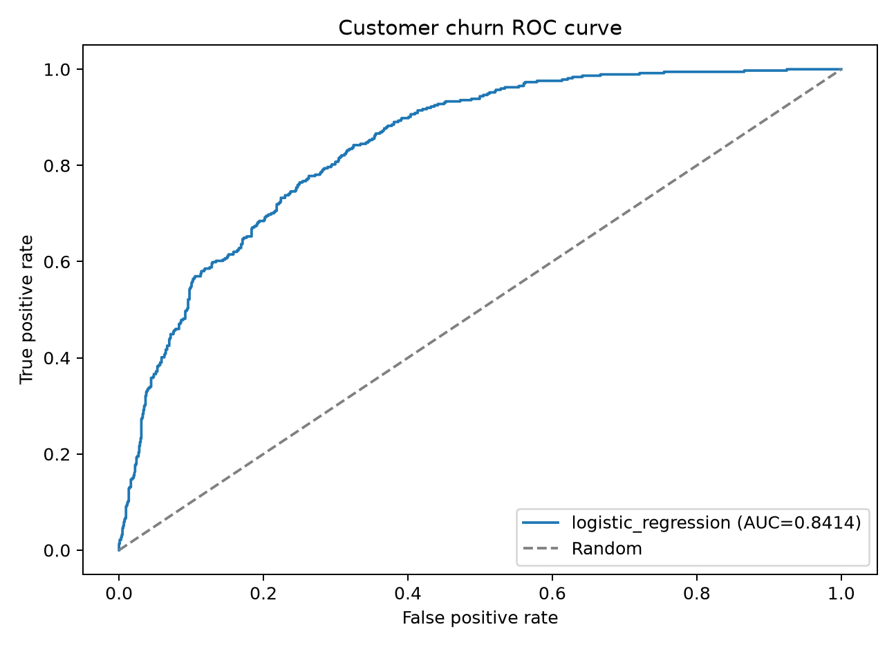

项目流程
- 清洗 TotalCharges 缺失值并统一字段类型。
- 数值特征标准化，类别特征进行独热编码。
- 五折分层交叉验证比较两种分类模型。
- 保存完整 Pipeline，避免训练与预测预处理不一致。
- 通过 FastAPI 提供健康检查、模型信息和预测接口。
- 使用 Pydantic 校验输入范围与类别。

使用公开电信客户数据完成流失预测，从数据清洗、特征工程、模型比较， 延伸到模型持久化和 FastAPI 在线预测接口。

POST /predict
{
"tenure": 2,
"Contract": "Month-to-month",
"MonthlyCharges": 95.0,
"TotalCharges": 180.0
}
完整字段和在线调试入口由 FastAPI 的 /docs 页面提供。